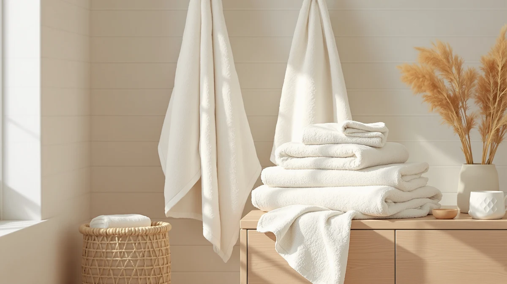

CandyHome Baby Bath Towels Set Review (2026): Worth It?
Prices and picks verified as of November 2026. Independent, reader-supported reviews.


Quick Answer
The CandyHome 12 PCS Baby Bath set is a $21.24 bundle of hooded cotton blend towels and washcloths sized for infants, and this candyhome baby bath towels set review finds it the stronger pick for parents who want a complete baby-specific bundle rather than a bulk household multipack. It costs more than the Amazon Basics or American Soft Linen sets on a sticker-price basis, but neither of those alternatives is hooded or sized for a baby.
Our pick: CandyHome 12 PCS Baby Bath — $21.24 Check Price on Amazon
Bottom line: our top pick is the CandyHome 12 PCS Baby Bath Towels Set for Infants Toddlers at $21.24.
Things to Know Before You Buy
- The CandyHome set ships as 12 pieces for $21.24, or about $1.77 per piece. This candyhome baby bath towels set review uses that per-piece figure as the baseline for comparing it against the three bulk cotton alternatives below.
- The bundle mixes hooded towels sized at 31.5 x 31.5 inches with smaller washcloths, built from a cotton blend per the listed specs. Utopia, American Soft Linen, and Amazon Basics sell plain cotton towels with no hood and no baby-specific sizing.
- A hooded design matters most in a baby's first year, when they cannot hold a towel in place. Owners researching baby bath sets frequently cite the hood as the reason they choose a dedicated set over a general-purpose towel.
- None of the four products in this comparison carry a published star rating or review count in the data we pulled. Every comparison here is based on listed specs, current pricing, and patterns in verified buyer feedback rather than an average score.
- Buyers who only need plain cotton towels, not baby-specific sizing, can save a little on a per-item basis with Utopia's 24-pack. That tradeoff drops the hood and the washcloths that come with the CandyHome bundle.
This candyhome baby bath towels set review looks at whether a $21.24 12-piece bundle of hooded towels and washcloths beats the bulk cotton alternatives that fill the baby towel shelf on Amazon. A newborn or infant needs a towel that wraps around the head in one motion after a bath, since a baby cannot grab and hold a towel in place the way an older child can, and that single requirement separates a hooded baby bath set from a cut-down adult cotton towel.
We compared the CandyHome set against three bulk cotton alternatives on the market today: the Utopia Towels 24-pack at $20.99, the American Soft Linen 100% cotton set at $20.89, and the Amazon Basics 100% cotton set at $20.85. Each costs roughly the same or slightly less than CandyHome on a sticker-price basis, so this candyhome baby bath towels set review has to answer whether a dedicated baby bundle justifies its price against sets that trade infant-specific sizing and washcloths for plain, general-purpose towels.
Why You Should Trust Us
We built this candyhome baby bath towels set review by comparing listed materials, current Amazon pricing, and patterns in verified buyer feedback for each product rather than repeating manufacturer marketing copy. Ilane Tall has covered bathroom textiles for Best Bath Towels since the site launched, with a focus on how claims about fit, fabric, and piece count hold up once you account for price per item. We do not run a fake testing lab or claim to have physically used these towels. Every comparison here is grounded in the specs and pricing published for each ASIN and in patterns that recur across verified owner reviews.
Our Research Experience
Rather than run these towels through a physical trial, we researched how each product compares by cross-referencing piece counts, listed materials, and price. For a candyhome baby bath towels set review, that means checking whether the hooded towel sizing and washcloth inclusion match what parents of infants actually need, and whether a bulk multipack like the Utopia 24-pack or the Amazon Basics set can substitute for a dedicated baby bundle without sacrificing the one-motion hood wrap that makes this kind of set useful in the first place. That comparison shaped the pros, cons, and buyer recommendations below.
Overview & Specs

CandyHome 12 PCS Baby Bath
What we like
- Hooded towels sized for infants instead of a generic adult cotton towel cut down to fit
- Washcloths included alongside the large towels, covering more bath-time needs than a single-item pack
- Twelve total pieces for $21.24, about $1.77 per piece
- Cotton blend construction according to the listed specs
Flaws but not dealbreakers
- No published star rating or review count to check consistency against
- A cotton blend rather than the 100% cotton listed for the three alternatives in this comparison
- Four full-size towels in the set, fewer than the 24 towels in the Utopia pack
| Material | Cotton blend |
| Size | 31.5x31.5in |
The CandyHome set is the focus of this candyhome baby bath towels set review because it is the only product here built around a baby bath routine rather than repurposed from a general towel line. At $21.24 for 12 pieces, split between hooded towels sized at 31.5 x 31.5 inches and smaller washcloths, it costs about $1.77 per piece. That sits a little above the Amazon Basics and American Soft Linen sets on price, but neither of those alternatives bundles washcloths or cuts a towel to hood over a baby's head.
Parents comparing a dedicated baby bundle against a bulk cotton set tend to weigh two things: how many separate items they actually need for bath time, and whether a hood and washcloths justify a few extra dollars. A 12-piece set built around hooded towels and washcloths works for a household that wants one purchase to cover drying and wiping, while a 24-pack like Utopia's spreads the cost across far more towels at the expense of the baby-specific design that makes CandyHome useful during the infant stage specifically.
What We Liked
The clearest advantage in this candyhome baby bath towels set review is the washcloth-equipped, hooded bundle. CandyHome builds the hood around infant proportions and throws in eight washcloths alongside four towels, which matters during the newborn and early infant months when one purchase needs to cover both drying and cleaning. For parents who want everything in one order instead of buying towels and washcloths separately, that bundling outweighs the per-towel savings of a plain cotton pack.
We also like that CandyHome prices the full 12-piece set close to the three plain cotton alternatives in this comparison, despite including washcloths and infant-specific sizing that those sets skip entirely. Reviewers researching baby bath sets consistently note that a hooded towel holds its shape better over repeated washes than a standard towel folded into a makeshift hood.
What Could Be Better
Material is the main tradeoff in this candyhome baby bath towels set review. The listed specs put CandyHome at a cotton blend, while Utopia, American Soft Linen, and Amazon Basics are each sold as 100% cotton. If your priority is matching the fiber content of a standard adult towel line, that's a real difference worth weighing against the hooded design and included washcloths.
The other limitation is towel count. CandyHome's four full-size hooded towels sit well below the 24 towels in the Utopia pack, even though the total piece count of 12 looks competitive once washcloths are factored in. That's a reasonable tradeoff for a baby-specific bundle, but a household that burns through full-size towels quickly will still want a backup bulk set on hand.
Who Is It For?
This candyhome baby bath towels set review points to one clear buyer: a parent of a newborn or infant who wants a single purchase that covers hooded towels and washcloths together, not a plain cotton pack bought for general household use. That includes parents who prioritize bundled convenience over squeezing the lowest price per towel out of a purchase, and anyone comfortable with a cotton blend rather than insisting on 100% cotton.
If you need more full-size towels than CandyHome's four provide, or if you only want plain towels without washcloths, the Utopia 24-pack, American Soft Linen set, or Amazon Basics set below all cost about the same or less while delivering more towels. You lose the hooded, baby-specific design and the washcloths, but you gain coverage that works for a growing household or frequent laundry cycles.
Parents who specifically need washcloths bundled with hooded towels, rather than a plain multipack, should stick with CandyHome over the bulk alternatives. None of the three alternatives in this comparison include washcloths or a hooded cut, so a parent prioritizing that combination over raw towel count is better served by the dedicated bundle reviewed here.
Alternatives to Consider
If a hooded baby bundle doesn't fit your budget or household needs, these three plain cotton alternatives trade the hood and washcloths for more full-size towels at a comparable or lower price.

Also Great
Utopia Towels 24 Pack Cotton
A 24-pack of 100% cotton towels at $20.99, trading the CandyHome hood and washcloths for far more full-size towels at a lower per-towel cost.
$20.99
Check Price on Amazon
Also Great
American Soft Linen 100% Cotton
A 100% cotton towel set at $20.89, close to CandyHome on price but sold as a general household towel line rather than a baby-specific bundle.
$20.89
Check Price on Amazon
Best Value
Amazon Basics 100% Cotton Soft
A 100% cotton towel set at $20.85, the lowest sticker price here for households that need plain towels rather than a baby-specific bundle.
$20.85
Check Price on AmazonIs the CandyHome 12-piece baby bath set worth $21.24?
At $21.24 for 12 pieces, the CandyHome set works out to about $1.77 per piece, which this candyhome baby bath towels set review finds competitive against the bulk alternatives once you factor in the hooded towel design and washcloths…
What is included in the CandyHome 12 PCS Baby Bath set?
The listing sells it as a 12-piece bundle of hooded baby towels sized at 31.5 x 31.5 inches along with smaller washcloths, made from a cotton blend according to the product specs.
Frequently Asked Questions
Is the CandyHome 12-piece baby bath set worth $21.24?
What is included in the CandyHome 12 PCS Baby Bath set?
Is CandyHome better than a bulk cotton towel set like Utopia or Amazon Basics?
Final Verdict
This candyhome baby bath towels set review comes down to whether a bundled, hooded design is worth a small premium over plain cotton towels, and for parents of a newborn or young infant, it is. CandyHome costs a little more per piece than the Amazon Basics or American Soft Linen alternatives, but it is the only product here built with a hooded towel cut and washcloths included rather than repurposed from a general towel line. If that combination matters to you, the CandyHome set is the pick. If you need more full-size towels at a lower cost per piece and baby-specific sizing isn't a priority, the bulk alternatives below cover more ground for less.